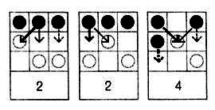

Little games to play with cards, dice, domino, or a Go board.
Domine is a 2-players domino game.
Each player draws a hand of seven dominoes and keeps them hidden from their opponent. The two numbers on either side of a domino are the Attack and Defense points, facing the opponent and the player respectively.
Each turn consists choosing which is the attack side and which is the defense side. Players alternate turns until all dominoes have been played. The player with the most living dominoes wins.
When a player attacks with a domino, the opponent must defend with a value equal to or higher than the attack. If the opponent's domino defense value is lower than the attack, the domino is killed. If the opponent's domino defense value is equal to or higher, then the domino survives.
Riposte and First-Strike
If the opponent survives and has an attack number higher than the player's domino defense value, the opponent wins over the player's domino in a riposte. Dominoes with equal sides have first-strike, meaning that they are played as attacking dominoes.

The player plays 4a1d, attacking by 4d. The opponent defends with 3a5d. The attack of 4d is blocked by 5d, and counters with a riposte of 3a, winning over 4a1d. The opponent wins this round, the player's domino is flipped.
Hako is a 2-players dice game.
Hako is a capture-type game, similar to Go, played with eight six-sided dice, each player has 4 dice, each of the six faces is unique and painted as four triangles with two different colors.

The unpainted side is called day, the painted is called night, the side with three painted triangles is called dawn, the side with three unpainted triangles is called dusk. A rope named the Sonozai, typically runs through the day and night faces and hold together a player's dice for safe carry.
How to Play
Players each pick a color, and begin with four dice. Each turn, a player rolls a die and put it into play to try and surround another die in play, with four triangles of its own color.

After playing their fourth and last die, players pick and reroll a die in play which was not played last and which does not create a floating die. A floating die is has no immediate orthogonal neighbor. The game ends when a player surrounds a die with four triangles of their color.

A special case can happen when a dice will create both a victory and a defeat, this state is called the Ho state, it is considered a draw.

The name Hako is the hexadecimal number 18, in Bibi Binary, which is the total number of faces on a Hako die. A paper Hako die can be made from a sonobe 6. The game was originally played by the Iridi people in Wiktopher. The Iridi die is a painted or engraved stone, textured dice are used when played in low-light settings or with blind players.

Donsol is a dungeon-crawler card game.
Donsol, designed by John Eternal, is a card game about exploring a dungeon of 54 playing cards.
A standard deck of 54 cards, jokers included, is a dungeon. Shuffle the deck and draw 4 cards, display them before you, this is a room. A room ends when all the cards are used up.
♥︎ Heart Potions
A potion card gives you health points equal to its value, up to a maximum of 21 health points.
Drinking multiple potions in a row will make you sick and result in no extra healing, only the first potion's value will be gained in HP. Potions are equal to their value, but face cards (J,Q,K,A) each are equal to 11.
♦ Diamond Shields
A shield card absorbs the damage difference between the shield value and that of the attacked monster's value.
Shields can only defend against monsters in descending value and if you use a shield on a monster with higher or equal value to the previous, it will break. A broken shield leaves you unarmored, and taking the full damage. Using shield card will always replace a previously equipped shield. Shields are equal to their value and face cards (J,Q,K,A) each are equal to 11.
♣♠ Club/Spades Monsters
A Monster card is equal to its value, but face cards are as follows J is 11, Q is 13, K is 15, A is 17; Jokers are both equal to 21.
You may escape a room. When escaping, the remaining cards are put back at the end of the deck. A player is allowed to escape a room:
- Easy Mode: When all monsters in the room have been dealt with, or when the player has not escaped the previous room.
- Normal Mode: Only when the player has not escaped the previous room.
- Hard Mode: Only when all monsters in the room have been dealt with.
The game was released in collaboration with John Eternal, for mobile in 2016, and re-released for Desktop in 2017 as Hundred Rabbits. While the game was designed on a train, without internet connection during Train Jam 2015, it seemed like Donsol's gameplay accidentally ended up quite similar to Zach Gage and Kurt Bieg's Scoundrel, designed in 2011. A rom of the game is available for both Famicom and Varvara, to learn more about the downloadable version, see this.
Two players sit on opposite sides of a go board and take turns.
A Phutball game begins with a single black stone, or the ball, placed at the center intersection of a rectangular grid. On each turn, a player may either:
- Place a white stone on any vacant intersection, or
- Perform a sequence of jumps.
To jump, the ball must be adjacent to one or more white stones. It is moved in a horizontal, vertical, or diagonal to the first vacant intersection beyond one or a sequence of white stones, the jumped white stones are then removed. If a jump is performed, the same player may continue jumping as long as the ball continues to be adjacent to at least one white stone, or may end the turn at any point. Jumping is not obligatory.

The game is over when a jump sequence ends on or over the edge of the board closest to the opponent (the opponent’s goal line) at which point the player who performed the jumps wins. It is legal for a jump sequence to step onto but not over one’s own goal line.
The game was created by John Conway, also creator of Fractran.
Pen & Paper Games
Hexapawn
Hexapawn is played on a rectangular board of variable size, for example on a 3×3 board or on a chessboard. On a board of size n×m, each player begins with m pawns, one for each square in the row closest to them. The pawns can only move forwards, unless they are attacking, in which case they move diagonally forwards and remove the piece in that position from the board. The winner is the first player to get one piece to the opposite side of the board or to wipe out all the opponent’s pieces. The human player always plays white and always goes first. ~
Each time the machine loses a game, you remove the counter that corresponds to the last move that the machine took. If there is only one counter left in this box, remove the counter that decided its previous move. This means that the machine will never again take the same losing moves. When the machine wins, no changes are made to the boxes, but each time the machine loses another counter is removed. Very quickly the machine becomes unbeatable.
Sprouts
The game is played by two players starting with a few spots drawn on a sheet of paper. Players take turns, where each turn consists of drawing a line between two spots, or from a spot to itself, and adding a new spot somewhere along the new line. In so-called normal play, the player who makes the last move wins. In misère play, the player who makes the last move loses.
- A new line cannot cross itself or any other line.
- No spot may have more than three lines attached to it.
Pipelayer
The game is played with two grids of dots that are slightly offset from one another. To win a player must make a continuous connection from one side of the board to the other in the long direction for his color of dots.
- The players take turns connecting two dots.
- A player can only connect dots that are adjacent horizontally or vertically and their own color.
Capture
Capture is played on a grid of dots. The players take turns connecting dots that are horizontally or vertically adjacent. If a player can complete a square then they capture that square. You must draw another line after making a capture. A player may make multiple captures in a single turn. After the last capture they must still connect two dots.
- The players take turns connecting two dots.
- The player who captured the most squares wins.
Peg Solitaire
Pegs is played on a shape made of pegs. The standard game fills the entire board with pegs except for the central hole. The objective is, making valid moves, to empty the entire board except for a solitary peg in the central hole.
- A valid move is to jump a peg orthogonally over an adjacent peg into a hole two positions away and then to remove the jumped peg.